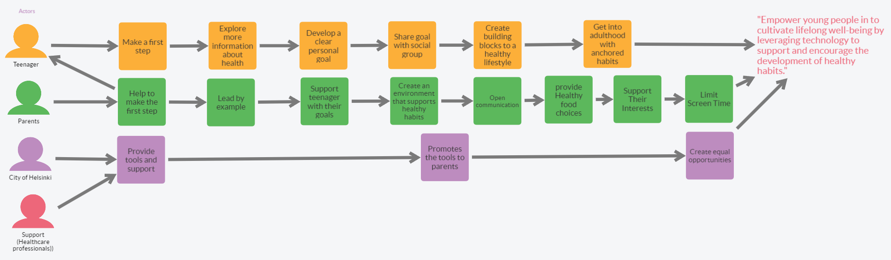

Map & Target
Motto
Supporting comprehensive well-being: Supporting healthy lifestyles and establishing new healthy habits
with the help of
well-being technology (sleep, nutrition, physical activity).
North Star
"Empower young people in to cultivate lifelong well-being by leveraging technology to support and
encourage the
development of healthy habits."
Sprint Questions
- How to get a teenager's attention?
- How to make a teenager motivated to healthy habits?
- How to motivate a teenager?
- How to involve teenagers and adults together with different culture and tradition?
- How to encourage teenagers for continuity for healthy lifestyle for their whole life?
- Data privacy?
- How to follow progress and success?
- Low income households?
- How to get funds?
- How to keep them engaged in the habits
- What kind of habits are we focusing on (diet, sport, sociability)
- Who will be implementing the solution?
- How to deal with the problem arising during the process of the project ?
Map
